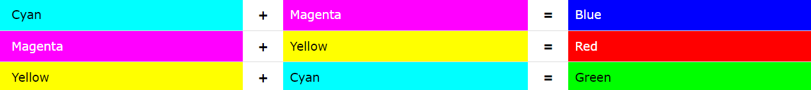

Význam
Barva, kterou vnímáme, je dána povahou = spektrálním složením světla přicházejícího od pozorovaného objektu.
Odpovídající vlnové délky ve vodě a v ostatních prostředích závisí na indexu lomu, pro vnímání barvy je podstatná energie, tedy frekvence. Oko je nejcitlivější na elektromagnetické záření vlnové délky 555 nm (540 THz), tj. na zelenou barvu.
V roce 1666 objevil Isaac Newton rozklad světla. Sluneční paprsek procházející skleněným hranolem obsahuje spojité spektrum 7 barevných oblastí červené, oranžové, žluté, zelené, modré, indigové a fialové Newton: „Korpuskule jsou různobarevné a jejich smíšením vzniká bílé světlo.“
Optický hranol je opticky průhledné těleso s dvěma rovinnými stěnami, které lámou světlo. Světlo při průchodu hranolem mění směr šíření rozkladem (disperzí) a úplným odrazem. Hranolu využil i Isaac Newton ke zjištění podstaty světla. Při experimentu, kdy umístil za sebe dva trojúhelníkové skleněné hranoly, jež se spojovaly základnami, první hranol rozložil bílé světlo na duhové spektrum, druhý rozložené barvy opětovně sloučil zpět. Díky tomuto pokusu si Newton uvědomil, že bílé světlo není v podstatě čisté, jak tvrdil Aristoteles, ale že obsahuje směs všech druhů barev.

Míchání barev
Primární barvy
Primární barvy jsou hlavní barvy v daném barevném systému. Primární barvy nelze vyrobit smícháním jiných barev a barevného systému.
Základní barvy pro světlo jsou červené, zelené a modré:

Základní barvy pro tisk jsou azurová, purpurová a žlutá:

Základní barvy pro malování jsou červené, žlutá a modré:

Sekundární barvy
Sekundární barvy jsou vyrobeny míchání dvou základních barev v barevném systému V barevných systémech jsou zde popsány troje sekundární barvy.
Sekundární barvy pro světlo jsou azurová, purpurová a žlutá:

Základní barvy pro tisk sou červené, zelené a modré:
Základní barvy pro malování jsou červené, žlutá a modré:

Terciální barvy
Terciární barvy se vyrábějí smícháním jedné primární a jeden sekundární barva v barevném systému. V RYB je šest jmenovaných terciárních barev:

Barevná chémata
Barevná schémata jsou logické kombinace barev na barevném kole. Účelem barevného schématu je vytvořit estetický pocit stylu a přitažlivosti.
Achromatické barevné schéma
Achromatické barevné schéma černá na bílém je výchozí barevné schéma pro webovou stránku. Achromatické barevné schéma bílá na černé je často preferováno pro menší zařízení. Bílá na černé vyžaduje u většiny zobrazovacích technologií méně energie (zlepšuje výdrž baterie).Monochromatická barevná schéma
Monochromatická barevná schémata se snadno vytvářejí, protože používají pouze jednu barvu. Monochromatická schémata používají různé tóny ze stejného úhlu na barevném kole ( stejný odstín ). Visit W3Schools
Analogická barevná schéma
Analogická barevná schémata se také snadno vytvářejí. Analogická barevná schémata se vytvářejí pomocí barev, které jsou na barevném kole vedle sebe. Visit W3Schools

Doplňková barevná schéma
Doplňková schémata se vytvářejí kombinací barev z opačných stran barevného kruhu.
Visit W3Schools

Triadická barevná schéma
Triadická schémata jsou tvořena odstíny rovnoměrně rozmístěnými kolem barevného kruhu. Visit W3Schools
Složená barevná schéma
Složená schémata jsou téměř stejná jako komplementární schémata. Místo použití barev, které jsou protikladné, používá barvy na obou stranách opačného odstínu. Visit W3Schools

MIND Mapička

MINI gameska

Citace
Colors Tutorial. W3Schools Online Web Tutorials [online]. Dostupné z: https://www.w3schools.com/colors/default.asp
Color Guessing Game Javascript | Coding Artist. Home | Coding Artist [online]. Dostupné z: https://codingartistweb.com/2023/02/color-guessing-game-javascript/
Wikipedie: Otevřená encyklopedie: Psychologie barev [online]. c2021 [citováno 22. 05. 2023]. Dostupný z WWW: